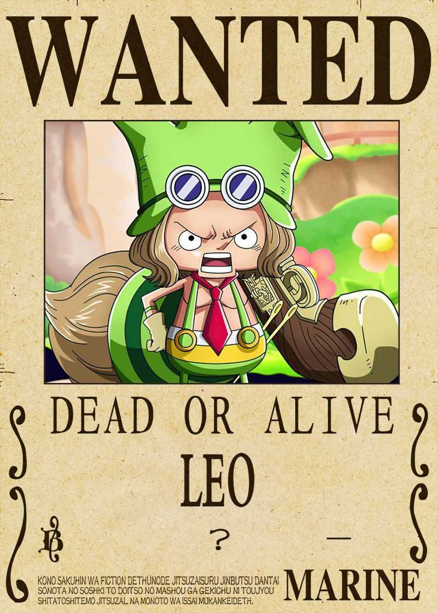

This web page is all about the Grand Fleet and Allies of the Straw Hat Pirates!!!!
Grand Fleet




Crews
Straw Hat Pirates - Monkey D. Luffy is the captain with 10 members and two open invation to Nefertari Vivi and Yamato
Barto Club - Bartolomeo is the captain of this crew of pirate with 56 members.
Beautiful Pirates - Cavendish is the captain of this crew of 74 members.
Happo Navy - The captain in Sai leading a fleet of 9 ships with over 1,000 members
Ideo Pirates - Lead by Ideo they are a crew of four people.
Tontatta Pirates - these Small pirates are stronger then most and faster then almost all. with 200 dwarfs.
New Giant Warrior Pirates - Are lead by Hajrudin andhave 5 members.
Yonta Maria Grand Fleet - Orlumbus is the leader of this group and has 56 ships with 4,300 members.
Ships
Straw Hat Pirates - 1 ship - Thousand Sunny
Beautiful Pirates - 1 ship - Sleeping white Horse of the Forest
Barto Club - 1 ship - Going Luffy-senpai
Happo Navy - 8 ships - 1 Happosai & 7 Ipposai
Ideo Pirates 1 ship - Unnamed ship formerly Nita Maria
Tontatta Pirates - 1 ship - Usoland
New Giant Warrior Pirates - 1 ship - Naglfar
Yonta Maria Grand Fleet - 56 ships - 1 Yonta Maria, 5 Santa Maria, and 50 Nita Maria
Allies

Boa Hancock
Koby
Marco
Sabo
Red Hair Pirates - Luffys mentor and friends
Franky Family
Neptune Family
Riku Family
Mink Tribe
Sun Pirates
Fire Tank Pirates
Vinsmoke Family
Country Territories
Fish-Man Island
Wano Country
Dressrosa
Arabasta
Amazon Lily